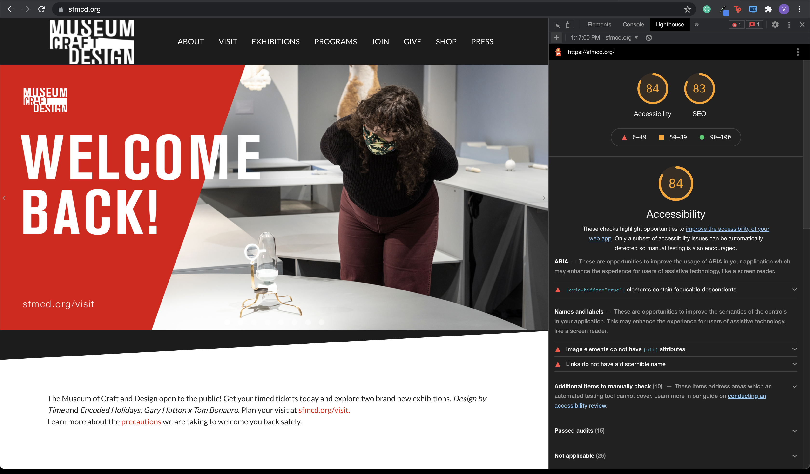
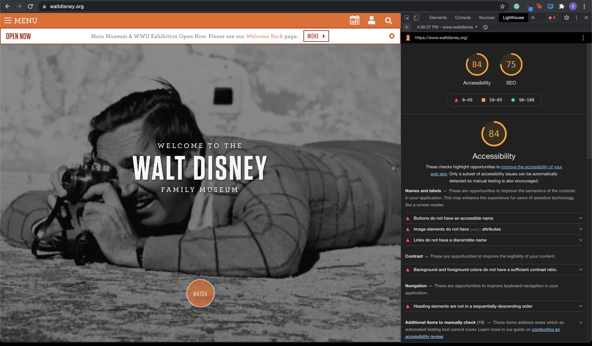

Assignment 01: Automatic Testing Scores
DH150: Web Coding + UX, Summer 2021
By Valentin Nguyen
This project is to test and improve the web-accessibility of websites that
display information about museums. Below are websites of five museums located
in San Francisco, California that I found interesting to investigate. As a
San Francisco native, I have personally gone to most of these museums in
person and had enjoyed my time there. However, I would like to see if their
websites are up to par with their exhibitions.
Introduction
Web accessibility is an important factor when designing and coding websites
and web tools so that anyone, especially people with disabilities, can use them.
However, many sites and tools are developed with accessibility barriers, making
them difficult for some users to use.
This project is to test and improve the web-accessibility of websites that
display information about museums. Below are websites of five museums located
in San Francisco, California that I found interesting to investigate. As a
San Francisco native, I have personally gone to most of these museums in
person and had enjoyed my time there. However, I would like to see if their
websites are up to par with their exhibitions.
I searched for the websites on the web browser Google Chrome and
used the web developer tool Lighthouse to check the websites' web accessibility
and SEO (search engine optimization) rankings.
1. Asian Art Museum
View the Asian Art Museum website

Asian Art Museum Accessbility Score: 85/100
A few accessbility issues on the Asian Art Museum homepage includes
buttons not having accessible names and links not having discernible names,
making it difficult for screen readers to properly read out what the buttons link to.
In some areas, there is also a lack of contrast between background and foreground colors,
which can make it difficult or impossible for some users to read.
Additionally, there are issues with keyboard navigation where some attributes
are not unique and focused on specific elements.
Asian Art Museum SEO Score: 92/100
The Asian Art Museum's SEO ranking is already good, however
there are a few attributes on the homepage where some links do not have
descriptive text. This can make it difficult for users to cunderstand
the website's content.
2. de Young Museum
View the de Young Museum website

de Young Museum Accessbility Score: 74/100
A few accessibility issues on the de Young Museum homepage include
not using ARIA, which could help better the experience for users that
utilize assistive technology, like screen readers, illegibility of content
from the colors not have enough contrast ratio, and links not having discernible
names and labels.
de Young Museum SEO Score: 75/100
The de Young Museum's SEO ranking could be better by formatting the content
in a better way for users to understand the app's content, such has adding
descriptive text to links. Also, links are now crawlable and could be better
formatted for crawlers to better understand the content.
3. Museum of Craft and Design
View the Museum of Craft and Design website

Museum of Craft and Design Accessbility Score: 84/100
A few accessbility issues on the Museum of Craft and Design homepage include
not using ARIA, buttons not having accessible names, image elements not having
[alt] attributes, and links not having discernible names.
Museum of Craft and Design SEO Score: 93/100
The Museum of Craft and Design's SEO ranking could be better by allowing
crawlers to access the website and its links so that the website can appear
in search results. Also, the HTML could be better formatted for crawlers
to better understand the website's content.
4. San Francisco Museum of Modern Art (SF MOMA)
View the SF MOMA website

SF MOMA Accessbility Score: 81/100
A few accessibility issues on SF MOMA's homepage include the background
and foreground colors having insufficient contrast ratios, elements in the
headings are not in order and could worsen keyboard navigation, image elements
not having [alt] attributes, and links not having discernible names.
SF MOMA SEO Score: 92/100
SF MOMA's SEO score is already good, but could be improved by adding [alt]
attributes to image elements.
5. The Walt Disney Family Museum
View the Walt Disney Family Museum website

The Walt Disney Family Museum Accessbility Score: 84/100
A few accessibility issues on the Walt Disney Family Museum's homepage include
buttons and links not having accessible or discernible names, insufficient
contrast ratios between the background and foreground colors, and heading elements
not being in sequentially-descending order.
The Walt Disney Family Museum SEO Score: 75/100
The Walt Disney Family Museum's SEO score could be improved by adding
descriptive text to a significant amount of links, adding [alt] attributes
to image elements, and allowing links to be crawlable so that the websites
can appear in search results.
Research Findings
In conclusion, I have found that almost all of the websites I have audited
have a lack of accessible names and labels for buttons or interactive links,
and also a poor contrast ratio between background and foreground colors.
These accessibility issues could be fixed with slight changes in the sites'
HTML and design. I was surprised to find these issues because I found most of
these websites legible and easy to navigate, but I understand that they may
not be so easy to navigate for users who use assistive technology or have
disabilities.